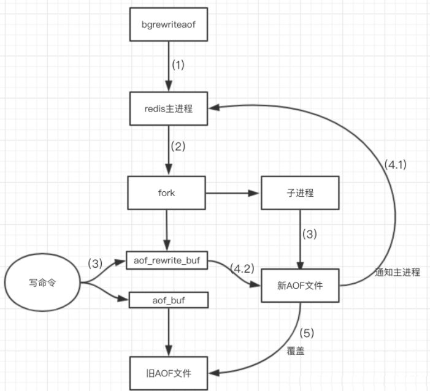
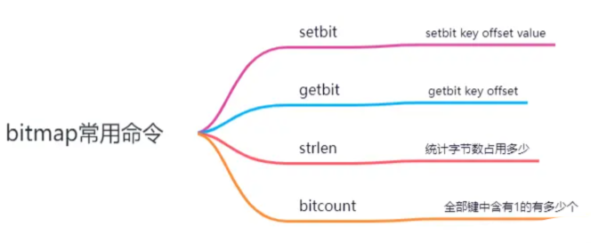
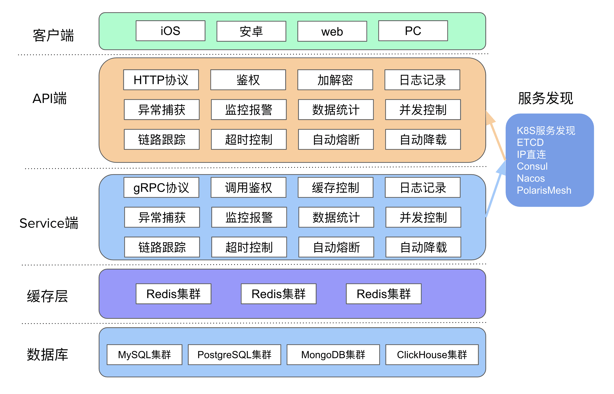
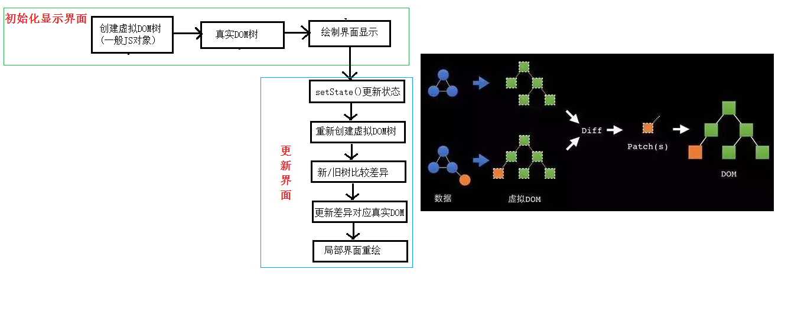
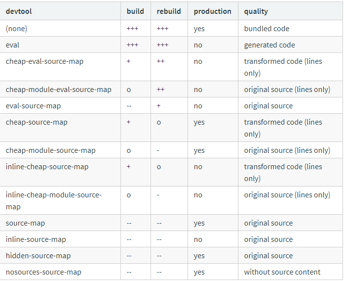
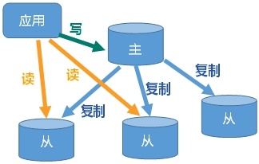
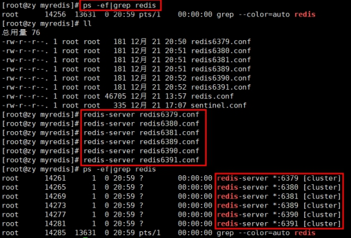

推荐阅读
- 
- 
- 


- 
- 
- 
- 

随便看看
如果有一天
在0与1构筑的虚拟疆域中砥砺前行，你是无畏的编程斗士，但切勿遗忘，身体才是承载智慧代码的坚实堡垒。身为程序员的你，是否已对深夜灯火下的键盘交响乐习以为常，却在不经意间忽视了生活中的规律作息与充足睡眠的滋养？
在浩渺的代码宇宙中探索航行，你是那位驾驭二进制语言的魔法师，是构筑数字王国的幕后英雄。然而，长夜漫漫的编程挑战、持久静坐的生活常态，是否已在你的身体里悄然埋下了疲劳的种子？此刻，让运动化身为你的专属“修复程序”，重启生命的能量系统，重焕生机。
在无尽的代码海洋中航行，你是否时常忽视了身体的能量补给站？作为程序员，我们用智慧构筑虚拟世界，却往往在现实生活的饮食规划上陷入困境。现在，让我们一起揭秘专属于程序员的健康饮食计划，让每一行代码都充满力量！
水太深，风太大，
ZEROYI
敛冷于眼，藏拙于神，潜动于灵魂，似愚非愚，大巧无巧，我们在思考中抵达内心的宁静和丰富。吾本来兹土,传法救迷情。一花开五叶，结果自然成。